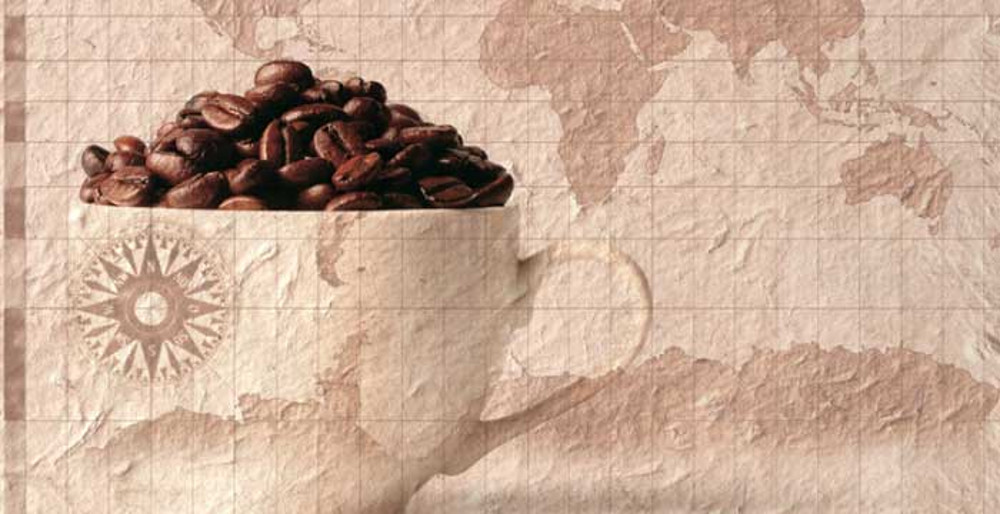
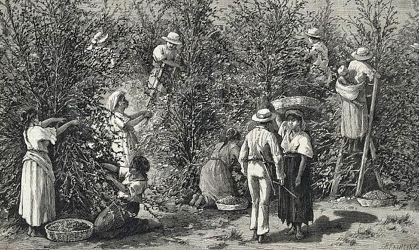
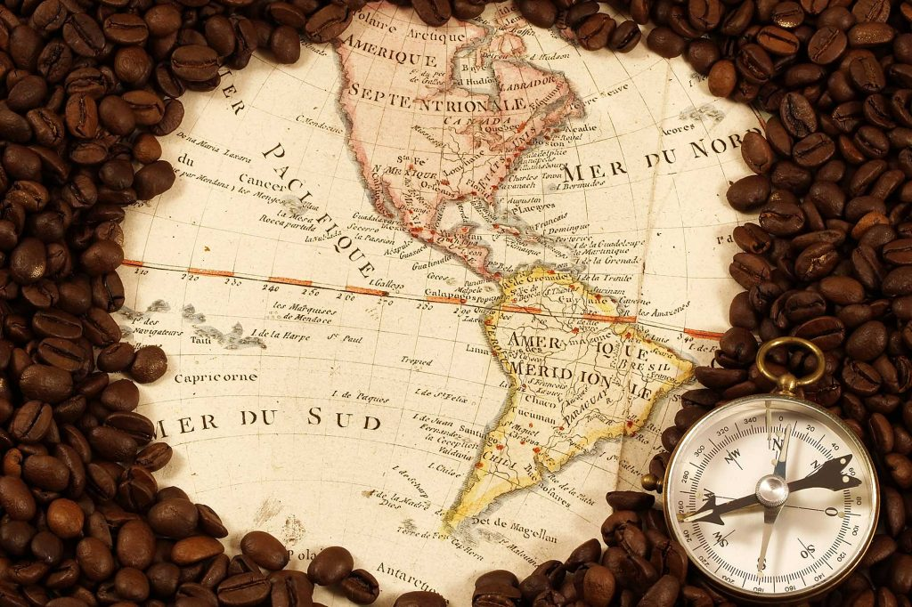

Origenes
La historia de cómo se extendió por todo el mundo el cultivo y el consumo de café es una de las más atractivas y románticas que pueda haber. Esa historia empieza en el Cuerno de África, en Etiopía, donde el cafeto tuvo su origen probablemente en la provincia de Kaffa. Hay varios relatos, imaginativos pero poco probables, acerca de cómo se descubrieron los atributos del grano tostado de café. Cuenta uno de ellos que a un pastor de cabras etíope le asombró el animado comportamiento que tenían las cabras después de haber mascado cerezas rojas de café. Lo que se sabe con más certeza es que los esclavos a los que se llevaba de lo que es hoy el Sudán a Yemen y Arabia a través del gran puerto de aquel entonces, Moca, sinónimo ahora con el café, comían la suculenta parte carnosa de la cereza del café.
El cafe llega a Asia
Los holandeses empezaron también a cultivar café en Malabar, en la India, y en 1699 llevaron alguno a Batavia, en Java, en lo que es ahora Indonesia. Unos cuantos años después, las colonias holandesas se habían convertido en la principal fuente de suministro de café a Europa. Hoy en día Indonesia es el cuarto exportador de café del mundo.
La llegada a Europa
Los comerciantes venecianos fueron los que primero llevaron el café a Europa en 1615. Al principio el café lo vendían sobre todo los vendedores de limonada y se creía que tenía cualidades medicinales. El primer establecimiento de café en Europa se abrió en Venecia en 1683, y fue el famosísimo Caffè Florian de la Plaza de San Marcos, que abrió sus puertas en 1720 y sigue aún hoy abierto al público.
El cafe en America
La primera referencia a que se tomaba café en Norteamérica data de 1668 y, pronto después de esa fecha, se abrieron establecimientos de café en Nueva York, Filadelfia, Boston y algunas otras ciudades. Fue en el decenio de 1720 cuando el café se empezó a cultivar por primera vez en las Américas, gracias a lo que es quizá el relato más fascinante y romántico de la historia del café. Gabriel Mathieu de Clieu era un oficial de la Marina francesa que estaba de servicio en la Martinica y que, en 1720, viajó a París con permiso. Con alguna ayuda y no poco encanto personal adquirió un cafeto que se llevó con él en el viaje por mar de vuelta. El cafeto fue instalado en una caja de cristal y dejado en cubierta para mantenerlo caliente y que no lo dañase el agua salada. El buque llegó a la Martinica y el cafeto fue replantado en Preebear, donde lo cercaron con un seto de espinas y lo cuidaron esclavos. El cafeto creció, se multiplicó, y en 1726 se hizo la primera cosecha. Está registrado que en 1777 había entre 18 y 19 millones de cafetos en la Martinica. Había quedado establecido el modelo para un nuevo cultivo comercial que podía darse en el Nuevo Mundo. Fueron los holandeses, sin embargo, los que primero empezaron a propagar el cafeto en América Central y del Sur, donde hoy en día reina sin rival como el principal cultivo con fines comerciales del continente.
